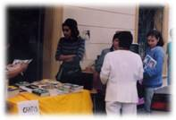
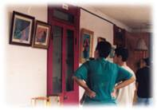

| Panorama d'événements |
|
|
Du 21 au 23 avril, le centre du Costa Rica a organisé une retraite de 3 jours pendant "la Semaine Sainte", célébrée en commémoration de Jésus Christ. Puisque c'était des vacances nationales, les initiés ont planifié une retraite pour prier en faveur d'une vie spirituelle meilleure et de la paix nationale. Nous avons remercié Maître pour son amour envers le Costa Rica. Dieu a entendu les prières des Costariciens pour la paix dans le pays puisque les conflits de longue date entre les citoyens et le gouvernement ont récemment pris fin.
Le troisième jour de la retraite, les initiés se sont sentis extrêmement bénis et comblés d'amour et de paix. Nous avons fait un barbecue ce jour là et invité les membres de nos familles, amis et autres invités. Nous avons eu droit à un beau temps, le ciel était dégagé et une brise apaisante soufflait. La vaste prairie verte où se tenait le barbecue créait un net contraste sur le bleu profond du ciel agrémenté de ballons de toutes les couleurs. Tout cela créait une image harmonieuse et pleine de vitalité.
Beaucoup d'invités, de pratiquants et des membres de leur famille ont participé à cet évènement. Les enfants jouaient joyeusement dans la grande prairie naturelle, pendant que les parents regardaient les cassettes vidéo de Maître. Certaines personnes ont échangé des idées spirituelles, pendant que d'autres apprenaient la Méthode Pratique. Certains ont même exprimé leur désir de recevoir l'initiation à la Méthode Guan Yin. En conséquence, plusieurs sessions d'initiation ont été planifiées pour les semaines à venir.
Une série de séminaires vidéo pour partager la Vérité, une à Cartago et deux à Heredia ont eu lieu du 29 avril au 20 mai. Le premier a eu lieu le 29 avril à la Casa de la Ciudad, un centre culturel à Cartago. Proche de l'entrée, au premier étage, un téléviseur passait une des cassettes vidéo de Maître, des livrets échantillons et des revues étaient à la libre disposition des gens intéressés pendant que les initiés étaient occupés. Au deuxième étage, des invités ont tout d'abord été accueillis par une exposition des créations artistiques de Maître et Ses publications, avant de pénétrer dans la salle du séminaire.
Comme la foule continuait à se rassembler, la salle que nous avions crue trop grande est devenue juste assez grande. Dans le hall, dès que les cassettes de Maître ont commencées à tourner, l'attention de l'audience a été immédiatement captivée. Après que la vidéo ait été montrée, les invités ont posé beaucoup de questions auxquelles a répondu en détail un messager Guan Yin. Ce jour là, presque tous les invités ont demandé à apprendre la Méthode Pratique. Alors que beaucoup habitaient très loin, ils ont néanmoins exprimé leur sincère désir d'assister à la méditation de groupe du centre.
Le second séminaire vidéo a eu lieu à l'Université de Heredia le 6 mai. Pour montrer leur sincère intérêt pour cet évènement, les autorités de l'Université ont repeint la salle de conférence spécialement avant le séminaire pour lui donner un nouvel aspect. Les images exposées montraient Maître en train de méditer. Les participants au séminaire semblaient rapidement accepter les enseignements de Maître, et ont aussi été très impressionnés par le talent artistique de Maître. Beaucoup de personnes ont demandé à apprendre la Méthode Pratique. Ensuite, une délicieuse cuisine végétarienne a été servie dans une atmosphère chaleureuse et d'excitation qui se répandait dans ce lieu.
Le 20 mai, le troisième séminaire vidéo a eu lieu à la Bibliothèque de Heredia. Une pluie torrentielle s'est mise à tomber ce jour là pour dissuader beaucoup de chercheurs de la Vérité à y participer. En fait, le séminaire a attiré beaucoup plus de gens que nous avions prévu. Dans cette atmosphère positive, les gens ont posé des questions sincères et pertinentes, et la plupart des personnes qui ont assisté au séminaire vidéo ont appris la Méthode Pratique.
Bien que les trois séminaires aient eu lieu dans deux villes proches l'une de l'autre, les questions posées par les membres de l'audience différaient beaucoup. Comme Cartago est le centre catholique du Costa Rica, la plupart des participants étaient catholiques, et leurs questions étaient liées à la Bible. En revanche, à Heredia, la plupart des participants posaient des questions sur la signification de l'illumination et de la méditation. Un participant qui a appris la Méthode Pratique nous a fait partager cette histoire. Il a récemment reçu l'appel d'un ami qu'il voit rarement. Celui-ci lui a dit qu'à partir de ce jour quand cinq étoiles tomberaient sur une ligne droite (le 5 mai) jusqu'à la fin du mois, il aurait la chance d'apprendre une méthode qui développe le pouvoir à travers l'usage des mains.
S'il réussissait à apprendre cette méthode, il serait capable d'utiliser ses qualités intérieures pour aider les gens. Mais s'il échoue, il devrait attendre deux cents ans pour avoir une autre chance. Par conséquent, il a fait des recherches, spécialement auprès des groupes liés aux religions orientales. Maintenant il a une attitude positive envers la Méthode Guan Yin, a-t-il dit, parce qu'il a eu une magnifique expérience en apprenant la Méthode Pratique.
|
|